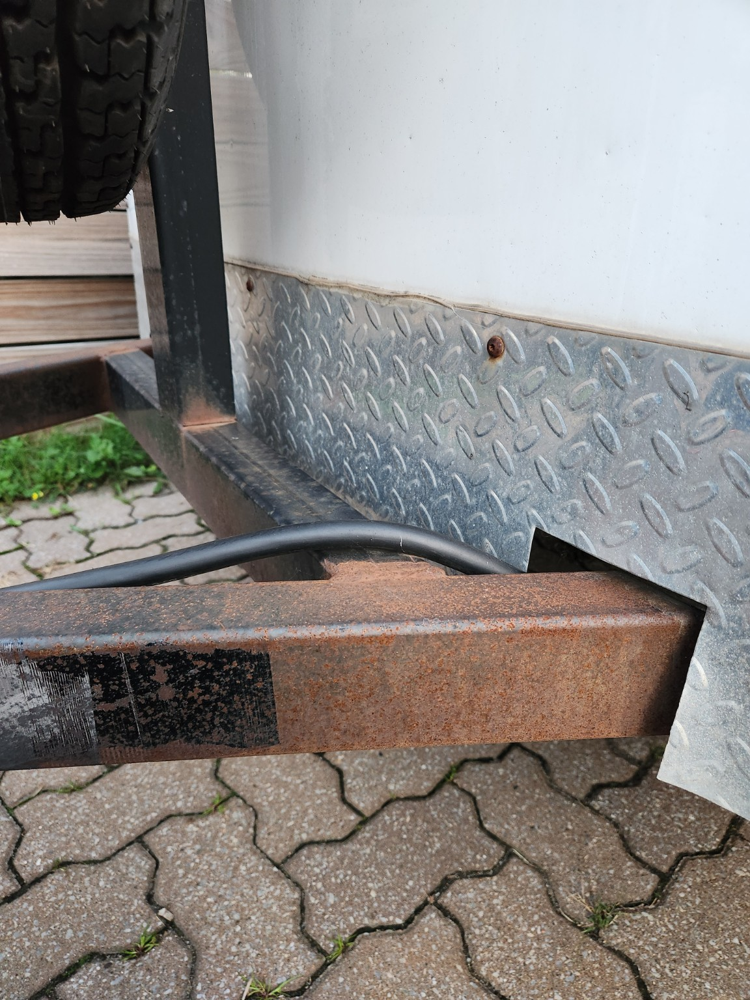

Retrait ciblé de rouille sur un châssis de remorque
Targeted rust removal on a trailer frame
Essai de nettoyage au laser d’une zone corrodée sur une structure métallique de remorque. Photos originales, sans retouche.
Laser-cleaning test on a corroded area of a trailer frame. Original photos, without retouching.
Avant et après
Before and after


Cliquez sur une photo pour ouvrir le JPEG original en pleine résolution. Les photos n’ont pas été retouchées, recadrées ou annotées.
Click a photo to open the original full-resolution JPEG. The photographs have not been retouched, cropped or annotated.
L’essai porte sur une zone ciblée; la deuxième photo ne représente pas un nettoyage complet de tout le châssis.
This test covers a targeted area; the second photo does not represent cleaning of the entire frame.
Voir d’autres essais
See more tests
Explorez les autres pièces de notre galerie.
Explore other parts in our gallery.